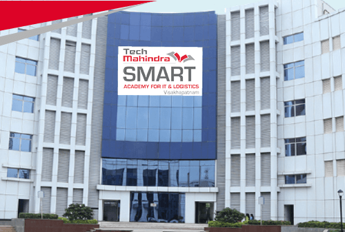

<
<
TECH MAHINDRA SMART EDUCATION
Information Technology Company

About Us
Tech Mahindra is an Indian multinational information technology services and consulting company. Part of the Mahindra Group, the company is headquartered in Pune and has its registered office in Mumbai. Tech Mahindra has over 146,000 employees across 90 countries.
Tech Mahindra is part of the Mahindra Group, founded in 1945, one of the largest and most admired multinational federation of companies with 260,000 employees in over 100 countries. It enjoys a leadership position in farm equipment, utility vehicles, information technology, and financial services in India and is the world’s largest tractor company by volume. It has a strong presence in renewable energy, agriculture, logistics, hospitality, and real estate. The Mahindra Group has a clear focus on leading ESG globally, enabling rural prosperity and enhancing urban living, with a goal to drive positive change in the lives of communities and stakeholders to enable them to Rise.
Our SMART centres aim to provide employability skills training to youth from economically weaker sections of
the urban community. The skill training is offered to the beneficiaries through a well-structured training program to ensure that after the completion of the training they are placed in suitable and dignified jobs. The SMART program places great emphasis on foundational skills for a job such as Spoken English, Basic IT and Workplace Readiness.
A total of 15 domains and 50 courses are being offered to students for them to opt from SMART, SMART+ (for Persons with Disabilities), and SMART-T (Technical) Centres
The success of Tech Mahindra Foundation’s initiative to launch the SMART Academy for Digital Technologies
in Vishakhapatnam has carved the pathway for establishing its second Digital Technologies Academy in Hyderabad.Centrally located at the
Tech Mahindra Campus at Ohri Towers in Hyderabad, the Tech Mahindra SMART Academy for Digital Technologies is attractive both location wise
and for the skills training it has to offer.
All Courses
Job-Oriented Courses Across Tech Mahindra SMART Academies
If you are thinking of enrolling in an job-oriented course, Tech Mahindra Foundation is a name you can trust upon.Choose from the below bouquet of job-oriented courses offered at various Tech Mahindra SMART Academies across the country
Paramedical & Allied Healthcare Courses in Delhi, Mohali, Mumbai, Navi Mumbai & Pune
1. Diploma Course in X-ray & Imaging Technology.

2. Diploma Course in Dialysis Technician (DT)

3. Certificate Course in Emergency Care Assistant

4. Post-Graduate Certificate Course in Hospital Front Office & Billing Executive

5. Certificate in ICU Technician

Digital Technology Courses in Delhi, Hyderabad & Visakhapatnam
1. Certificate Course in UI/UX Development

2. Certificate Course in Graphic Design

3. AWS re/Start Program

4. Certificate in Digital Marketing

5. Certificate Course in Java Full Stack Development

HYDERABAD, CHENNAI, BANGALORE, PUNE, GURUGAON